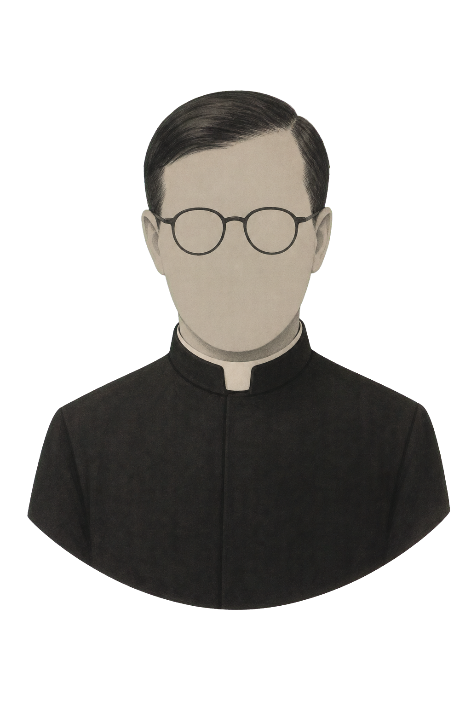

Un cuaderno conversacional que busca responder con tono humano, paternal y esperanzado: ayudarte a descubrir a Dios en la vida ordinaria, en el trabajo bien hecho, la familia y la amistad.
No es san Josemaría ni lo representa. Es una herramienta basada en sus fuentes que intenta conservar un espíritu de cercanía, libertad, filiación divina y santificación de la vida cotidiana.